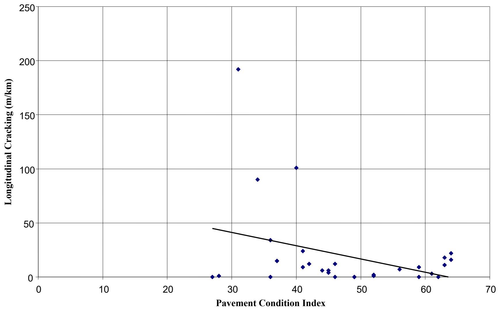
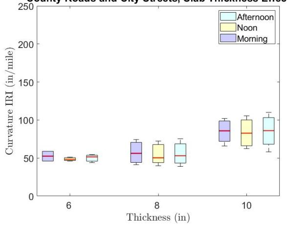
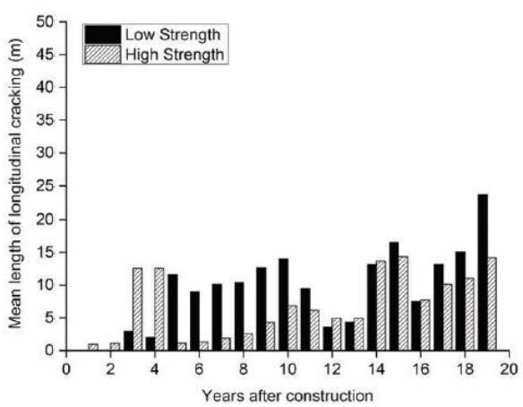
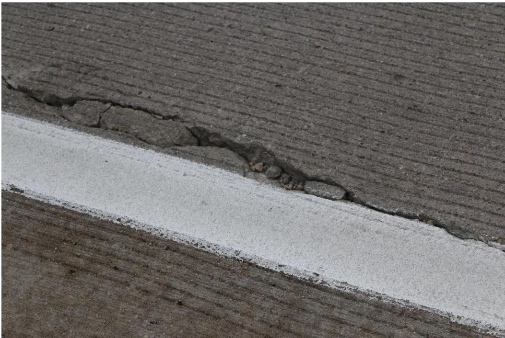
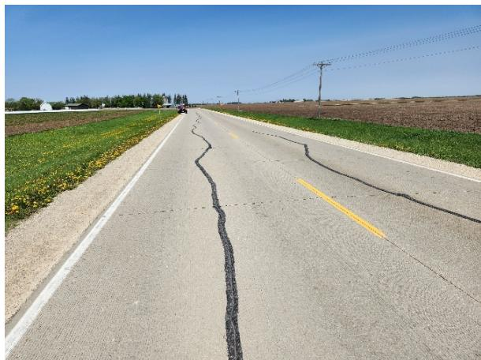
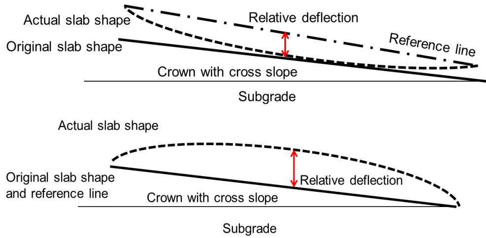
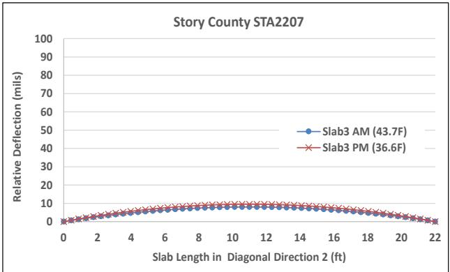
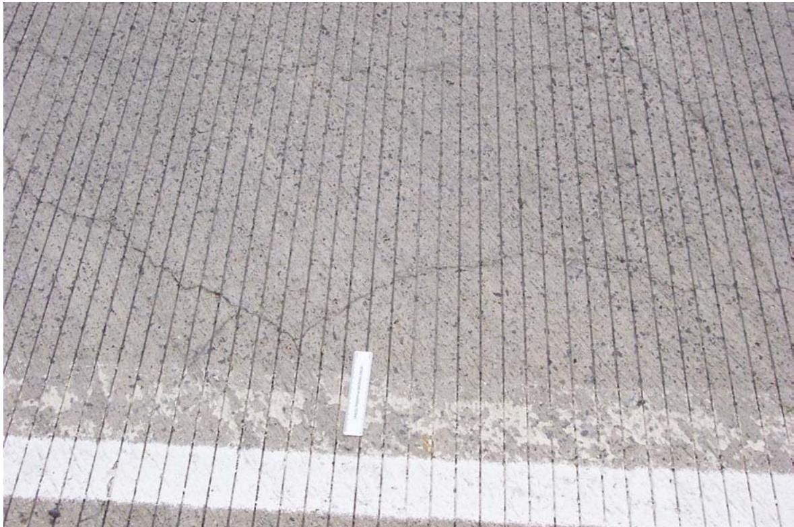

Longitudinal Cracking
Longitudinal cracking is a distress where cracks run parallel to the pavement centerline, commonly observed in low- to mid-volume county roads in Iowa. It results from early-age factors such as concrete materials, mix design, and construction practices, as well as heavy agricultural loading and subgrade failure. As a specific manifestation of slab design and geometry issues, it can be mitigated by reducing slab width to less than 12 feet [7]. Wider slabs (e.g., 14 feet) are more prone to this distress because their larger size increases sensitivity to environmental loads and induces higher stresses along the wheel path [7]; consequently, narrower widths help decrease transverse curling stresses that lead to longitudinal tensile failure [7]. A well-compacted, engineered subgrade designed to meet traffic loads in varying environmental conditions is also crucial for prevention [1].
Sources (19)
Overview of Longitudinal Cracking
Longitudinal cracking tends to increase as pavements age, with sections in service for more than 20 years showing higher incidence rates compared to newer installations [1]. While longitudinal cracking increases with average daily traffic, it tends to decrease as the annual average daily truck traffic (AADTT) increases [1], and pavement sections exhibiting higher Pavement Condition Index (PCI) values demonstrate correspondingly lower levels of both longitudinal and transverse cracking [1]. Furthermore, faint longitudinal cracking can be present in jointed concrete pavements near transverse joints even when the overall pavement condition appears excellent and no scaling is evident [2].

Longitudinal cracking vs. Pavement Condition Index [1]Fatigue-based longitudinal cracking can occur under specific circumstances that traditional fatigue calculations fail to explain, particularly when axles are spaced approximately 10–20 feet apart, creating a negative cantilever effect with high top-of-slab stresses at transverse joints [3]. This phenomenon is distinct from conventional load transfer failures and requires specialized modeling for accurate prediction [3].
Material and Environmental Influencing Factors
Key attributes of good concrete pavements include slab thickness, air content, age, strength, temperature-moisture associated volume change, joint sawing timing, centerline joint sawing depth, base-slab friction, and shoulder connection [1]. Regarding structural behavior, increasing slab length from 15 to 20 feet has been observed to increase upward curling, which can exacerbate stress concentrations at joint corners [4]. To evaluate material properties, the forced resonance method serves as the standard ASTM C-215 procedure for measuring dynamic Young’s Modulus by inducing vibration until a peak voltage response occurs at the resonant frequency [5].

County Roads and City Streets, Slab Thickness Effect (a) [4]Material selection significantly impacts pavement durability; for instance, reducing the maximum size of coarse aggregate to prevent freeze-thaw damage can inadvertently increase the frequency of intermediate transverse cracks, many of which develop faulting [6]. Conversely, the use of aggregates possessing a low coefficient of thermal expansion, such as limestone, serves to mitigate longitudinal cracking by reducing thermal stress accumulation [7].

Factors affecting the extent of longitudinal cracking: (a) weather conditions, (b) types of base course, (c) slab thickness, (d) slab width, and (e) concrete strength [7]Subgrade and Foundation Considerations
The use of a macadam subbase serves primarily as an effective drainage layer that prevents D-cracking in PCC pavements, though it requires a minimum pavement thickness of 5.5 inches to achieve a 20-year design life compared to thinner sections over other bases [8]. In terms of material stability, fly ash-stabilized subgrades exhibit significantly lower spatial variability than natural soils, reducing the coefficient of variation for stiffness to approximately 20–22 percent compared to up to 71 percent in natural subgrade [8]. Furthermore, modeling pavement foundations with uniform subgrade properties reduces maximum principal stresses and deflections, increasing fatigue life by approximately 1.7 times compared to models using non-uniform support [8].
 Contour plots of principal stresses and deflections under uniform and nonuniform subgrade conditions (from White et al. 2005b) [8]
Contour plots of principal stresses and deflections under uniform and nonuniform subgrade conditions (from White et al. 2005b) [8]
Structural integrity is also influenced by soil type and foundation quality; for instance, arc-shaped longitudinal cracks originating from transverse joints are frequently attributed to foundation deficiencies, including improper subbase compaction or frost heave [7]. Additionally, pavements constructed on coarse-grained subgrades demonstrate superior performance compared to those on fine-grained subgrades, with fine-grained bases accounting for 63% of poorly performing sections [4].
Joint Design and Load Transfer Mechanisms
When dowel bars are inadequate in transferring load, joint loading causes the critical flexural stress to initiate longitudinal cracking in the wheel paths at transverse joints [9]. Similarly, poor load transfer efficiency (LTE) at joints and cracks can directly cause longitudinal cracking in jointed concrete pavements, as inadequate stress reduction leads to excessive flexural stresses that initiate distress [5]. If a longitudinal joint locks or freezes due to corrosion of the dowel bar, new cracks parallel to the joint form directly behind the dowels, which widen during concrete contraction and lead to load transfer failure [9]. In such contexts, pure-shear load transfer mechanisms, such as aggregate interlock, are particularly desirable under combined externally applied and thermal loading conditions because they offer no additional restraint to longitudinal curling [9]. Furthermore, skewed joints are associated with a typical 5% increase in stress due to curling and warping restraint, which can lead to delamination and corner cracking [4].
 Relative deflection between adjacent pavement slabs [9]
Relative deflection between adjacent pavement slabs [9]
Maintenance and design choices also play critical roles; for instance, dowelled joints have been estimated to last 2.5 times longer than non-dowelled joints before requiring maintenance or rehabilitation [4]. Joint sealing practices significantly influence pavement life-cycle costs by minimizing moisture infiltration that causes base course erosion, subgrade failure, and related cracking, though some agencies have replaced sealants with single narrow sawcuts to avoid issues with incompressibles infiltrating joints, which can push bridge back walls and cause blowups [3]. Additionally, tying concrete shoulders is an effective method for greatly alleviating the occurrence of faulting and pumping in pavement sections [6], and pavements equipped with tied Portland cement concrete (PCC) shoulders demonstrate superior performance against longitudinal cracking compared to those utilizing hot mix asphalt or granular shoulder alternatives [7].
Widened Slab Performance and Iowa Field Studies
In 14 ft widened jointed plain concrete pavement (JPCP) slabs, longitudinal cracking is caused primarily by skewed joint orientation combined with temperature gradients between top and bottom of slabs [7]. These skewed joints create non-uniform load transfer, resulting in higher stresses on the obtuse angle corner, whereas rectangular joints provide more uniform stress distribution and are recommended for widened slabs [7]. This was evidenced by Iowa field studies involving 12 field sites investigated across Iowa (7 widened, 5 conventional) and 82 cores tested [7]. Consequently, the Iowa DOT adopted rectangular joints for widened JPCP after 2005, replacing skewed joints that caused many longitudinal cracks [7]. Using ISLAB 2005 and EverFE 2.25 finite element tools to model slab behavior, researchers found the best performance occurs with normal (rectangular) joint orientation, untreated aggregate base, and 15 ft transverse joint spacing [7]. To further minimize the severity and extent of longitudinal distress for 14-foot widened panels, maintaining a width-to-thickness ratio between 1.2 and 1.5 is recommended [7].
 Top view of skewed joint [7]
Top view of skewed joint [7]
Longitudinal cracking is most prevalent at widening joints where the crack aligns with or falls within the wheel path, whereas tying these joints effectively eliminates this specific distress mechanism [10]. For example, in a 15-foot-wide truck lane constructed on I-75 in Michigan, extensive longitudinal cracking manifested immediately after construction and originated specifically from the right wheel path [11]. Additionally, longitudinal cracking can occur in traffic lanes constructed with rectangular joints when a newly added right-turn lane composed of PCC slabs with different joint orientations is placed immediately adjacent to them [12].

Longitudinal cracks at Site 5 [12]Overlay and Composite Pavement Behavior
In unbonded overlays, longitudinal cracks frequently initiate at the interface between the original concrete slab and asphalt widening units due to differential movement and stress concentration [13]. These cracking patterns closely mirror those present in the underlying asphalt surface prior to construction, appearing within one year and indicating a reflective mechanism rather than traffic-induced distress [14]. Doubling the depth of cracks or joints at the edges of the top PCC pavement in composite pavements increases longitudinal stresses in the underlying ACC layer by 67 percent [13]. Furthermore, working centerline joints cannot be bridged with concrete up to 4.5 inches in depth without expecting some reflective cracking [13]; specifically, bridging working centerline joints with concrete up to 4.5 inches deep inevitably leads to reflective longitudinal cracking, particularly when bridging wide panels [10]. In bonded overlays, longitudinal joint formation using GPS-guided saws allows for precise matching of underlying joints, whereas manual splitting methods often fail to maintain alignment; the use of off-the-shelf GPS equipment on early-entry or water-cooled saws provides a viable method for controlling centerline cracking in concrete-to-concrete applications [15].

Longitudinal cracking at Site 4 (a) prior to overlay and (b) post-overlay [14]Regarding material and design variables, the depth of the concrete overlay and the inclusion of synthetic fibers do not influence the frequency or severity of visual distress, including longitudinal cracking [10]. However, unbonded concrete overlays designed with transverse joint spacings exceeding 15 feet are highly unusual and often exceed the modeling capabilities of standard design tools, leading to unpredictable mid-panel cracking [14]. Concrete overlays exhibit a higher susceptibility to curling and warping compared to full-depth pavements due to their greater surface-area-to-volume ratio, which accelerates water loss during construction and generates elevated thermal stresses, an increased vulnerability that often necessitates the use of shorter transverse joint spacing in thinner overlay sections to mitigate stress accumulation [16]. In HMA overlays over rubblized PCC, longitudinal cracking is most prevalent outside the wheel path area, particularly when edge drains are absent or when rubblization produces pieces smaller than two inches in size [17]. Consequently, rubblization projects that fail to sufficiently break PCC slabs into small enough fragments exhibit high rates of longitudinal and transverse reflection cracking, necessitating test pit verification to confirm adequate slab fragmentation [17]. While longitudinal cracking is rarely observed in latex-modified concrete with very early strength gain (LMC-VE) overlays due to their reduced shrinkage characteristics compared to conventional materials [18], the susceptibility of LMC-VE to early-age thermal and autogenous shrinkage can lead to overlay cracking when the underlying substrate acts as a restraint during volumetric changes [18]. Additionally, bridge deck overlays with thicknesses exceeding three inches are prone to debonding failure between the overlay and existing substrate due to differential expansion and contraction stresses [18].
Construction Techniques and Joint Forming
Longitudinal joint forming knives attached to slip-form pavers can create weakened joints by separating aggregates and leaving a concrete cream layer up to 2 inches deep [13]. While these knives can leave a gap behind the paver that requires multiple bullfloat passes to close, modifying the knife design allows for proper closure in a single pass [10]. Although the ‘knife’ joint former device can successfully form longitudinal joints in plastic concrete without sawing, premature cracking incidents have led to its temporary ban in Iowa; however, when properly executed, the knife operation produces an open or hairline crack that strictly follows the intended alignment or adjacent tining groove [15].
 A schematic for the concrete paver with the joint-forming knife [15]
A schematic for the concrete paver with the joint-forming knife [15]
In contrast, GPS-controlled sawing can align longitudinal joints in bonded overlays within one inch horizontally of existing underlying joints, effectively controlling centerline cracking [15]. This precision is critical for preventing reflective cracking that typically occurs when overlay joints deviate from the original pavement alignment [15]. Conversely, manual methods for establishing longitudinal joint locations, such as splitting the slab width, can result in deviations of up to two inches or more between overlay and original centerlines [15]. Such misalignments are considered unacceptable in bonded overlays because they significantly increase the risk of reflective longitudinal cracking [15].
Reinforcement and Aggregate Specifications
The use of deformed tie-bars in multiple traffic lane and shoulder designs requires careful evaluation, as tying too many lanes or shoulders together can contribute to longitudinal random cracking [3]. This risk is heightened when pavements are constructed during wide swings in ambient temperature or when using unbound aggregate bases [3]. Consequently, specific design procedures for bar diameters, spacings, and embedment lengths must be implemented based on base course type to address load transfer efficiency across various materials, including unbound aggregate and permeable asphalt [3]. As an alternative, Fiberglass reinforced plastic (FRP) devices can be used as corrosion-free alternatives to steel tie bars in longitudinal joints, though they require a greater cross-sectional area due to a lower modulus of elasticity [9].
In other pavement configurations, such as continuously reinforced concrete pavement (CRCP), longitudinal cracking tends to align directly with the placement of the longitudinal reinforcement bars rather than forming randomly across the slab [6]. Additionally, fiber reinforcement can potentially extend the viable range of concrete overlay joint spacing to 30 or 40 feet by preventing mid-panel transverse cracking, a failure mode that typically occurs in plain concrete sections at these spacings [14].
Case Studies and Field Observations
Longitudinal relative deflection in field investigations typically ranges from -14.8 to -1.6 mils during upward curling and warping conditions, with diagonal directions often exhibiting the highest degree of curvature compared to longitudinal and transverse axes. [12]

Calculation of relative deflection: upward curling and warping (top) and downward curling and warping (bottom) [12]The difference in relative deflection between adjacent slabs generally remains within 6 mils, though afternoon measurements often show slightly higher values than morning readings due to reduced surface moisture from prior precipitation. [12]

Morning and afternoon relative deflection of Slab 3 at Site 2: longitudinal (top left), transverse (top right), diagonal 1 (bottom left), and diagonal 2 (bottom right) [12]In bridge decks constructed with staged pours and transverse milling, westbound lanes may exhibit primarily longitudinal cracks while eastbound lanes show random cracking despite identical mixture designs. [2]

Close-up of exposed aggregate and random cracking on the Route 351 deck [2]Rubblized pavement sections primarily exhibit longitudinal cracking as their main distress, indicating that factors such as HMA mixture segregation and poor edge compaction often contribute more to deterioration than the rubblization process itself. [17]
 Picture of longitudinal cracking on HMA-overlaid rubblized PCC (I.D. No. 21: IA3 in Delaware County) [17]
Picture of longitudinal cracking on HMA-overlaid rubblized PCC (I.D. No. 21: IA3 in Delaware County) [17]
Related Concepts
- Widened Concrete Slab — 14 ft slab design to move loads away from critical slab edges
- Jointed Plain Concrete Pavement — Pavement type using widened slabs
- Pavement Curling — Temperature gradient effect on slab behavior
- Pavement Warping — Moisture gradient effect on slab behavior
- Slab Design & Geometry
Ground penetrating radar can identify subsurface materials-related cracking in portland cement concrete pavements even when surface symptoms like staining or map cracking are not readily evident, though it may fail to detect distress in severely map-cracked sections diagnosed with premature failure. [19]
GPR surveys can reveal periodic signals at the concrete-subgrade interface that are indicative of moisture gradients or variable support, which often correspond to deteriorated concrete or poor subgrade conditions beneath distressed pavements. [19]
The Second-Generation Curvature Index (2GCI) utilizes pseudo strain gradient calculations to isolate the mechanical effects of curling and warping from other roughness sources like faulting or cracking. [4]
References
- J. K. Cable and H. Ceylan, "Defining the Attributes of Good In-Service Portland Cement Concrete Pavements," Center for Portland Cement Concrete Pavement Technology, Iowa State University, Ames, IA, Rep. DTFH61-01-X-00042 (Project 9), 2004. [Online]. Available: https://www.intrans.iastate.edu/wp-content/uploads/2018/03/pavement_attributes.pdf
- S. Schlorholtz and R. D. Hooton, "Deicer Scaling Resistance ... Containing Slag Cement, Phase 1: Site Selection and Analysis of Field Cores," National Concrete Pavement Technology Center, Ames, IA, Rep. TPF-5(100), 2008. [Online]. Available: https://www.cptechcenter.org/wp-content/uploads/2018/03/schlorholtz_deicing_phase1.pdf
- D. Harrington, R. Rasmussen, D. Merritt, T. Cackler, and P. Taylor, "Long-Term Plan for Concrete Pavement Research and Technology—The Concrete Pavement Road Map (Second Generation): Volume II, Tracks (FHWA-HRT-11-070)," National Center for Concrete Pavement Technology, Iowa State University, Ames, IA, 2012. [Online]. Available: https://www.fhwa.dot.gov/publications/research/infrastructure/pavements/pccp/11070/11070.pdf
- K. Tian, D. King, B. Yang, S. Kim, A. Alhasan, and H. Ceylan, "Impact of Curling and Warping on Concrete Pavement: Phase II," Program for Sustainable Pavement Engineering and Research (PROSPER), Iowa State University, Ames, IA, Rep. TR-749, 2023. [Online]. Available: https://intrans.iastate.edu/app/uploads/2023/06/Impact_of_Curling_and_Warping_Phase_II_w_cvr.pdf
- B. M. Phares, H. Ceylan, R. Souleyrette, O. Smadi, and K. Gopalakrishnan, "Development of a High Speed Rigid Pavement Analyzer – Phase I Feasibility and Need Study," National Concrete Pavement Technology Center, Ames, IA, Rep. TPF-5(136), 2008. [Online]. Available: https://www.intrans.iastate.edu/wp-content/uploads/2018/03/high_speed_pvmt_analyzer_w_cvr.pdf
- J. Grove, G. Fick, T. Rupnow, and F. Bektas, "Material and Construction Optimization for Prevention of Premature Pavement Distress in PCC Pavements," National Concrete Pavement Technology Center, Ames, IA, Rep. TPF-5(066), 2008. [Online]. Available: https://www.intrans.iastate.edu/wp-content/uploads/2018/03/mco-final.pdf
- H. Ceylan, S. Kim, Y. Zhang, S. Yang, O. Kaya, K. Gopalakrishnan, and P. Taylor, "Prevention of Longitudinal Cracking in Iowa Widened Concrete Pavement," Institute for Transportation, Ames, IA, Rep. TR-700, 2018. [Online]. Available: https://www.intrans.iastate.edu/wp-content/uploads/2018/07/longitudinal_cracking_prevention_in_widened_concrete_pvmt_w_cvr.pdf
- D. White and P. Vennapusa, "Optimizing Pavement Base, Subbase, and Subgrade Layers for Cost and Performance on Local Roads," Concrete Pavement Technology Center and Center for Earthworks Engineering Research, Ames, IA, Rep. TR-640, 2014. [Online]. Available: https://www.intrans.iastate.edu/wp-content/uploads/2018/03/local_rd_pvmt_optimization_w_cvr.pdf
- M. L. Porter and R. J. Guinn, Jr., "Synthesis of Dowel Bar Research / Assessment of Dowel Bar Research," Center for Transportation Research and Education (CTRE), Iowa State University, Ames, IA, Rep. HR-1080, 2002. [Online]. Available: https://www.intrans.iastate.edu/wp-content/uploads/2018/03/dowelbarsynthesis.pdf
- J. K. Cable, J. L. Morud, and T. R. Tabbert, "Evaluation of Composite Pavement Unbonded Overlays: Phase III," CTRE, Iowa State University, Ames, IA, Rep. TR-478, 2006. [Online]. Available: https://rosap.ntl.bts.gov/view/dot/24065
- J. K. Cable and D. P. Frentress, "Two-Lift Portland Cement Concrete Pavements to Meet Public Needs," Center for Transportation Research and Education, Iowa State University, Ames, IA, Rep. DTF61-01-X-00042 (Project 8), 2004. [Online]. Available: https://www.intrans.iastate.edu/wp-content/uploads/2020/10/two_lift.pdf
- H. Ceylan, S. Yang, K. Gopalakrishnan, S. Kim, P. Taylor, and A. Alhasan, "Impact of Curling and Warping on Concrete Pavement," Institute for Transportation, Ames, IA, Rep. TR-668, 2016. [Online]. Available: https://www.intrans.iastate.edu/wp-content/uploads/2018/03/curling_and_warping_impact_on_concrete_pvmt_w_cvr.pdf
- J. K. Cable, M. L. Anthony, F. S. Fanous, and B. M. Phares, "Evaluation of Composite Pavement Unbonded Overlays: Phases I and II," Center for Portland Cement Concrete Pavement Technology, Iowa State University, Ames, IA, Rep. TR-478, 2003. [Online]. Available: https://www.intrans.iastate.edu/research/completed/evaluation-of-composite-pavement-unbonded-overlays-phase-iii-tr-478-hr-1093-proj-2/
- D. King, B. Yang, P. Taylor, and H. Ceylan, "Field Performance of Fiber-Reinforced Concrete Overlays," Institute for Transportation, Iowa State University, Ames, IA, Rep. TR-816, 2025. [Online]. Available: https://www.intrans.iastate.edu/wp-content/uploads/2025/05/field_performance_of_frc_overlays_w_cvr.pdf
- P. D. Wiegand, J. K. Cable, T. Cackler, and D. Harrington, "Improving Concrete Overlay Construction," National Concrete Pavement Technology Center, Ames, IA, Rep. TR-600, 2010. [Online]. Available: http://publications.iowa.gov/20076/1/IADOT_tr_600_Improving_Concrete_Overlay_Construction_2010.pdf
- J. Gross, D. King, D. Harrington, H. Ceylan, Y. A. Chen, S. Kim, P. Taylor, and O. Kaya, "Concrete Overlay Performance on Iowa's Roadways (Field Data Report)," National Concrete Pavement Technology Center, Ames, IA, Rep. TR-698, 2017. [Online]. Available: https://www.intrans.iastate.edu/wp-content/uploads/2017/09/Iowa_concrete_overlay_performance_w_cvr.pdf
- H. Ceylan, K. Gopalakrishnan, and S. Kim, "Rehabilitation of Concrete Pavements Utilizing Rubblization and Crack and Seat Methods (Phase II): Performance Evaluation of Rubblized Pavements in Iowa," CTRE, Iowa State University, Ames, IA, Rep. TR-550, 2008. [Online]. Available: https://www.intrans.iastate.edu/wp-content/uploads/2018/10/rubblization_pavements.pdf
- K. Wang, B. M. Shankaramurthy, A. Anand, Y. Sargam, K. Freeseman, and B. Phares, "Performance Evaluation of Very Early Strength Latex-Modified Concrete (LMC-VE) Overlay," Institute for Transportation, Iowa State University, Ames, IA, Rep. TR-771, 2024. [Online]. Available: https://bec.iastate.edu/wp-content/uploads/2024/10/performance_evaluation_of_LMC-VE_overlay_w_cvr.pdf
- S. Schlorholtz, B. Dawson, and M. Scott, "Development of In Situ Detection Methods for Materials-Related Distress (MRD) in Concrete Pavements: Phase 1," Center for Portland Cement Concrete Pavement Technology, Iowa State University, Ames, IA, Rep. CTRE 00-96, 2003. [Online]. Available: https://www.intrans.iastate.edu/wp-content/uploads/2018/03/mrd.pdf
Feedback on this page